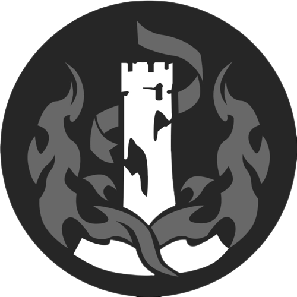
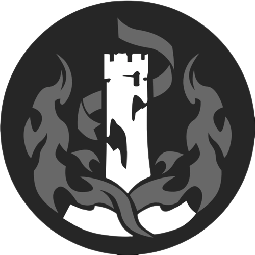

Related Entry
- The Destruction
 

Frankly, I still don't understand why Nanook the Destruction was born. Terminus the Finality was already traversing the universe before Nanook appeared.
Is the Destruction not included in the Finality?
We know so little about the secrets of the Paths. From the example of Xipe and Ena, we know that Paths with similar concepts can collide with each other, such as the Order being included in the Harmony resulting in Xipe absorbing Ena when the former ascended. It feels rather like survival of the fittest.
However, there are examples of similar Paths co-existing for different lengths of time, such as the Preservation with the Remembrance and the Abundance with the Propagation. I guess perhaps our mortal conclusions about the Paths are still not at a high enough level. The true meaning of a Path cannot be completely expressed with just one word, or perhaps there are even deeper secrets regarding the Paths and the Aeons.
Nanook the Destruction
"If the increase of entropy is a fundamental law of the universe, then the heat death would be the inescapable destiny of the material world. So, why is it that we bother to struggle to survive? Expansion, fusion, and then annihilation. If we wish to welcome the new, then we must first embrace the end."
- From a scientist just before pressing the button for nuclear detonation,
2152 AE
The birth of the universe is a mistake. If civilization is a cancer emerging quietly from the boundless stars, then war is the only common language known to all intelligent life. To correct this mistake and to clean up this tainted universe, Nanook became the avatar of entropy.